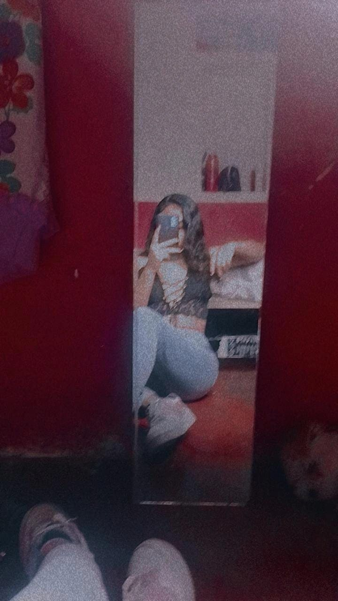
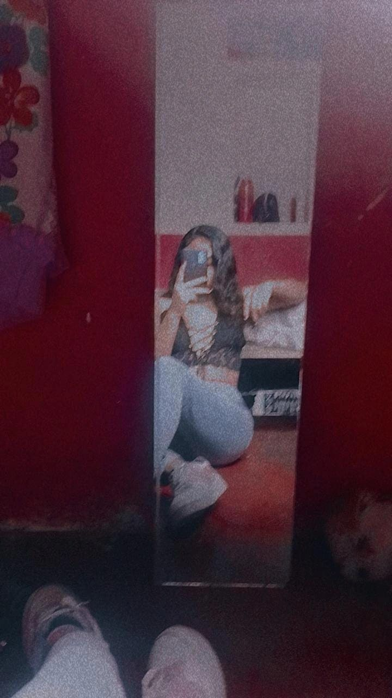

Sobre mí
Me llamo Sandra Quiñones Ríos, mejor conocida como Andy, tengo 23 años con una mente analítica y creativa, forjada en el estudio de la ingeniería en sistemas. Me expreso a través del gusto musical, capaz de apreciar desde los clásicos hasta los ritmos más vanguardistas.
Video Personal
Música Personal
Galería de Fotos
 

Redes Sociales